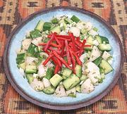

|
Cucumber, Pear & Mint SaladAfrica: Tanzania | ||||
| Makes: Effort: Sched: DoAhead: |
1-3/4 # ** 30 min Yes |
An outstanding salad, sure to be a hit, and it will not wilt on the buffet. Tasty and refreshing, it is a modern Tanzanian salad, see Comments. | |||
|
14 7 3 3 2 ------- 1 1 1-1/2 1/3 ------- |
oz oz oz T --- T T T t --- |
Cucumbers (1) Pear (2) Scallions Onion, white Mint, fresh -- Dressing Vinegar, wht wine Lime Juice Olive Oil ExtV Salt --------------- |
MAKE - (30 min + cooling time)
|